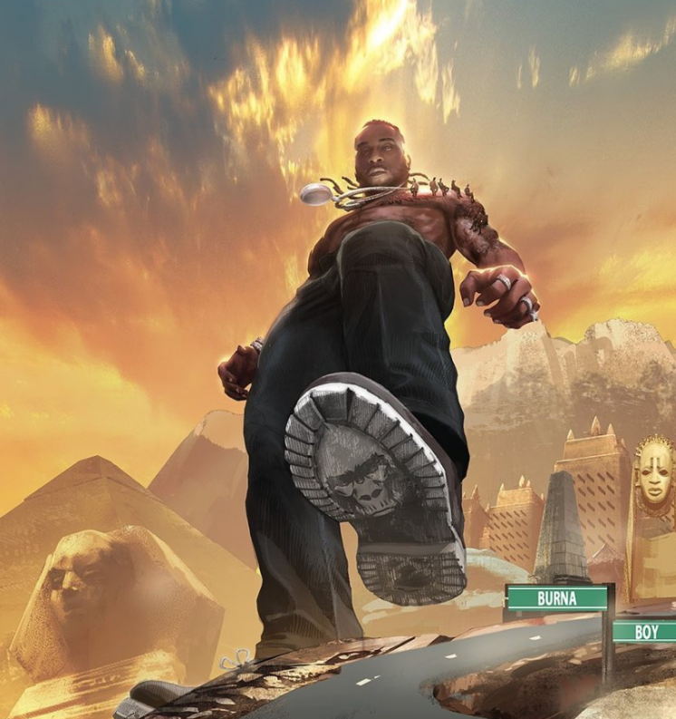

History of BURNA BOY

Danmi Ebounoluwa Ogulu was born in Port Harcourt,Rivers state, Nigeria on the 2nd of July 1991 and currently he his 31 years of age . His mother Bose, worked as language translator. Danmi grew up in southern Nigeria and became making his own beats using fruitloops. He attended Corona secondary school in Agbara (Ogun state) and relocated to London to futher hus studies. He later studied media technology at University of Sussex from 2008 to 2009. know professionally as Burna Boy/ Africa Giant is a nigerian singer, songwriter and record producer,he has a sibling named Nissi Ogulu. He rose to stardom in 2012 after releasing "Like to Party" the lead single from his debut studio album, L.I.F.E, which was his first album. in 2019, he won Best International Acts at the 2019 BET Awards, and was announced as an Apple Music Up Next artist. his fourth studio album, Africa Giant, was released in July 2019 and won tghe album of the year at 2019 ALL AFRICA MUSIC AWARDS and was nominated for a Best World Music Awards. He was awarded the African Artist of the year at 2020 VGMA's. Burna Boy released his fifth studio album, Twice as Tll, in August 2020, which was nominated for the same category at the 63rd Annual Grammy Awards, Making him the first Nigerian Artist with back-to-back nomination at the Grammys.
Burna boys songs:
- Burna boy featuring Wizkid with Ballondor:
- Burna boy with on the low
Back to Homepage

To top